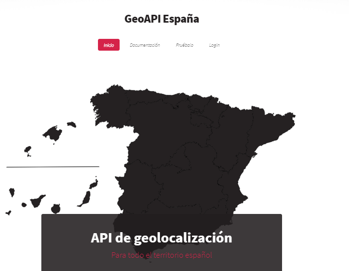

Hecho por Carlos Trujillo y José Palacios.
¿Qué es un servicio web?
Programa diseñado para el intercambio de información máquina a máquina, sobre una red.
Una computadora o programa solicita y recibe información de otra computadora o programa.
A quien solicita la información se le llama cliente y a quien envía la información se le llama servidor.

Comienzos de HTML
También se le conocía como HTTP/0.9. Una petición se hacía en una sóla línea, que comenzaba con un get, seguido del recurso a pedir.
Comienzos de HTML
No usaba cabeceras HTTP, es decir, sólo se podían transmitir archivos HTML y no de ningún otro tipo. También había información del estado ni códigos de error; si había un problema, el archivo HTML era devuelto con una descripción del problema.
¿Qué es REST?
Define un conjunto de principios arquitectónicos por los que se pueden diseñar servicios Web que se centran en los recursos de un sistema, lo que incluye la forma en que los estados de los recursos se dirigen y transfieren a través de HTTP por un amplio rango de clientes que están escritos en diferentes lenguajes.
HTTP 1.0
Esto se llevó a cabo 1991 y 1995: un servidor y un navegador, añadían una nueva funcionalidad y se evaluaba su aceptación. Por esto, eran comunes los problemas de interoperatividad. En 1996, se publicó el RFC 1945, para acabar con los problemas, siendo este, la definición del protocolo HTTP/1.0.
Ejemplos de API's REST

GEOAPI España
GEOAPI España
En la opción de Pruébalo tienes dos opciones:
- Realizar una búsqueda con el formulario dado.
- Buscar por calle.